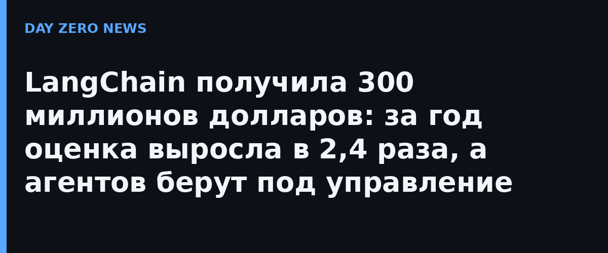

13 ноября LangChain официально объявила о привлечении 300 млн долларов по оценке 3 млрд — раунд вела CapitalG (фонд Alphabet), крупные чеки принесли новые инвесторы GIC и DFJ Growth, подтянулись старые — IVP и Sapphire Ventures, а также Salesforce Ventures, Insight Venture Partners, QuantumLight и MongoDB Ventures. Для сравнения: октябрьский Series B год назад принёс компании 125 млн при оценке 1,25 млрд — то есть за год оценка выросла в 2,4 раза. Общий объём привлечённых средств, по официальному пресс-релизу, теперь составляет 460 млн долларов.
LangChain продаёт не очередную нейросеть, а «обвязку» для них: фреймворки LangChain и LangGraph для сборки агентов и платформу LangSmith для их запуска, проверки и контроля. В компании формулируют ставку прямо: агенты изменят экономику, и выигрывают те, кто контролирует эти системы, а значит — каждой компании нужно «владеть своим интеллектом». Поэтому платформа строится вокруг трёх контуров: запуск агентов в безопасной среде (Runtime), улучшение их работы через тесты и мониторинг (Improvement) и централизованный контроль доступа агентов к моделям, инструментам и данным (Governance) — с шлюзами, бюджетами на модели и защитой чувствительных данных.
На LangSmith, по данным компании, уже работают более 7 000 организаций — от стартапов Harvey и Rippling до NVIDIA, Toyota и Salesforce. Кли Clay через платформу мониторит сотни миллионов запусков агентов в месяц, а Workday сократил срок вывода нового агента в продакшн с пяти месяцев до менее суток. 20 ноября LangChain обещает показать новые возможности платформы на отдельном мероприятии.
Именно управленческий слой сегодня становится узким местом агентской инфраструктуры: кейсов, где агент сам слил секреты или получил лишние права, за последний месяц хватило бы на отдельный канал. Деньги CapitalG и GIC — сигнал, что «диспетчерские» для ИИ-агентов теперь считают не расходной статьёй, а ключевым активом: кто управляет агентами, тот и владеет их интеллектом.